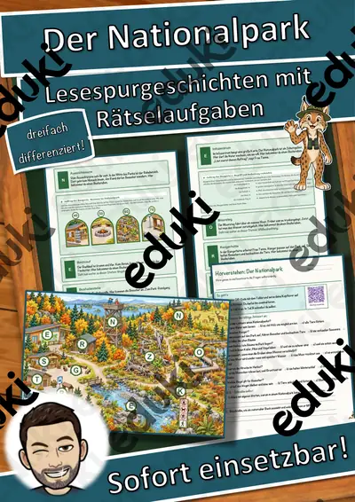
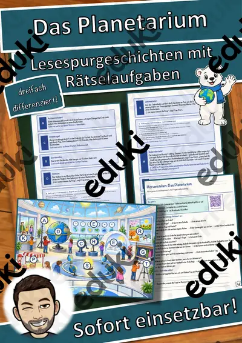
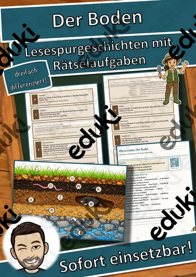
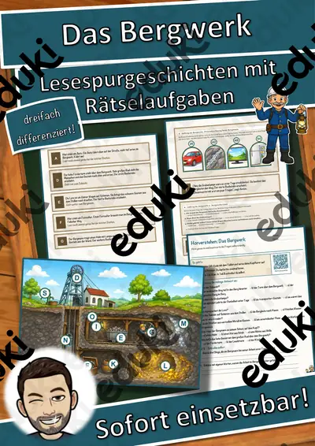
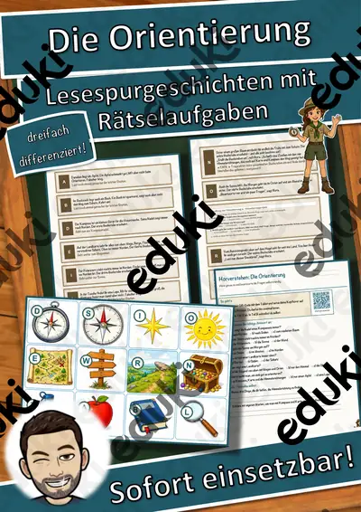
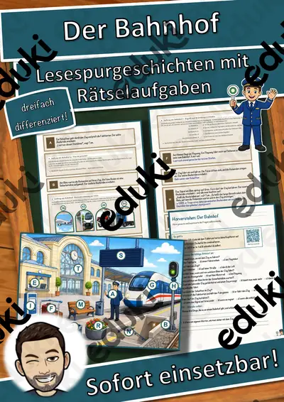
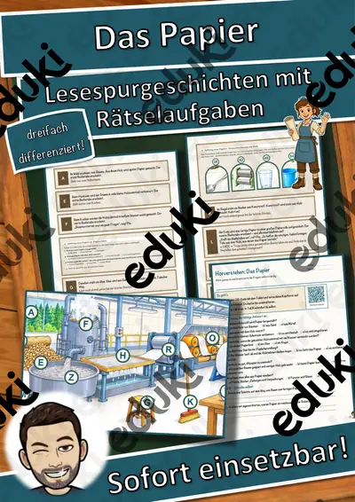
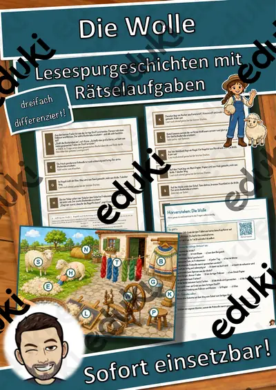

Die große Länderrallye – Lesespurgeschichte mit Rätselaufgaben (Klasse 5)
Begib dich mit deiner Klasse auf eine spannende Lesespur einmal rund um die Welt! Die Kinder begleiten eine junge Hauptfigur zu verschiedenen Ländern und Kontinenten und erfahren dabei ganz nebenbei viel über Länder, Hauptstädte und Sehenswürdigkeiten der Erde.
Diese Lesespurgeschichte verbindet motivierendes, sinnentnehmendes Lesen mit echtem Sachwissen über die Länder und Kontinente der Erde und schult zugleich das genaue Arbeiten. Das Material ist SOFORT EINSETZBAR und in DREI DIFFERENZIERUNGSSTUFEN (leicht ★ / mittel ★★ / schwer ★★★) angelegt, sodass alle Kinder einer Klasse am selben Thema arbeiten können.WICHTIG: Das komplette Material ist sowohl in FARBE als auch in SCHWARZ-WEISS enthalten – ideal zum Sparen von Druckkosten.DAS IST ENTHALTEN
- Lesespurgeschichte in 3 Niveaus (leicht, mittel, schwer)
- farbiger Lageplan als Suchkarte
- Hörverstehen mit QR-Code zur MP3 (Kinder hören selbstständig mit Kopfhörern)
- vier Aufträge auf dem Weg: ein Verbinde-Rätsel, ein Sach-Quiz, eine Rechenaufgabe und ein Steckbrief
- Rätselseite (Wörter-Suchsel + Wissensfragen)
- Ausmalbild zum Thema
- ausführliches Lösungsblatt für die Lehrkraft
- alles zusätzlich als komplette Schwarz-Weiß-VarianteSO FUNKTIONIERT DIE LESESPURDie Kinder lesen ab START, entnehmen dem Text einen Hinweis auf einen Ort, suchen ihn auf dem Plan und lesen beim dort abgebildeten Buchstaben weiter. Eingebaute Sackgassen dienen der Selbstkontrolle. Am Ende werden die gesammelten Buchstaben umgestellt und ergeben ein geheimes Lösungswort. (Die Lösungen sind selbstverständlich nur im Lösungsblatt für die Lehrkraft enthalten.)INHALTLICHER SCHWERPUNKTDie Länder und Kontinente der Erde: die sieben Kontinente, bekannte Länder mit ihren Hauptstädten, berühmte Sehenswürdigkeiten und Besonderheiten sowie das Lesen und Nutzen einer Weltkarte.ABGEDECKTER LEHRPLAN (Klasse 5)
- Erdkunde / Geografie: Kontinente und Länder der Erde – die sieben Kontinente, Länder und Hauptstädte, Sehenswürdigkeiten, Orientierung auf der Weltkarte.
- Deutsch – Lesen mit Texten und Medien umgehen: Lesestrategien anwenden, Texten gezielt Informationen entnehmen, sinnentnehmend und selektiv lesen, Schlüsselwörter nutzen; Selbstkontrolle und Lesemotivation durch die Lesespur; Zuhören: einem Sachhörtext konzentriert folgen und Wesentliches entnehmen (Hörverstehen mit MP3).
- Mathematik – anwendungsbezogene Sachaufgabe im Kontext des Themas (Grundrechenarten und Größen), Ergebnisse deuten.
- Fächerübergreifend / Kompetenzen: selbstständiges Arbeiten, genaues Lesen und Prüfen, Konzentration und Ausdauer, kreatives Gestalten (Ausmalbild).
Geeignet für Freiarbeit, Stationenlernen, Vertretungsstunden, Wochenplan und Homeschooling. Klassenstufe 5 (differenziert einsetzbar auch in angrenzenden Jahrgangsstufen).
Ähnliche Materialien

Der Nationalpark – Lesespurgeschichte mit Rätselaufgaben (Klasse 5)

Das Planetarium – Lesespurgeschichte mit Rätselaufgaben (Klasse 5)

Der Boden – Lesespurgeschichte mit Rätselaufgaben (Klasse 5)

Das Bergwerk – Ein Abenteuer unter Tage – Lesespurgeschichte mit Rätselaufgaben (Klasse 5)

Die Orientierung – Schatzsuche mit Kompass und Karte – Lesespurgeschichte mit Rätselaufgaben (Klasse 5)

Der Bahnhof – Eine Reise mit der Bahn – Lesespurgeschichte mit Rätselaufgaben (Klasse 5)

Das Papier – Vom Baum zum Papier – Lesespurgeschichte mit Rätselaufgaben (Klasse 5)
